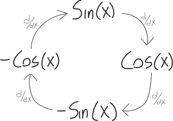

Trig Derivatives (Trust Me)
What are the derivatives of trig functions? From drawing pictures, you’ve probably now figured out: \[\sin'(x) = \cos(x)\] \[\cos'(x) = -\sin(x)\] The proofs take a bit more work and a bit more machinery than I think we have time for at the moment. Oh well! By the way, what’s the derivative of a tangent? \[\tan'(x) = \left(\frac{\sin(x)}{\cos(x)}\right)' = \text{guess we could work this out with quotient rule???}\]
Here’s something cool: the derivatives of trig functions cycle! Imagine we want to take the second derivative of sine. This works out to be: \[\begin{align*} \left(\sin x\right)'' &= \left(\cos x\right)'\\ &= -\sin x \end{align*}\] Then, if we were to take another derivative of that, we’d have \(-\cos x\), and if we were to take the derivative of that, we’d have \(-(-\sin x) = \sin x\)! We can summarize:

Hey, everyone—does that circle remind you of anything???? Can you think of anything else that repeats every four terms??